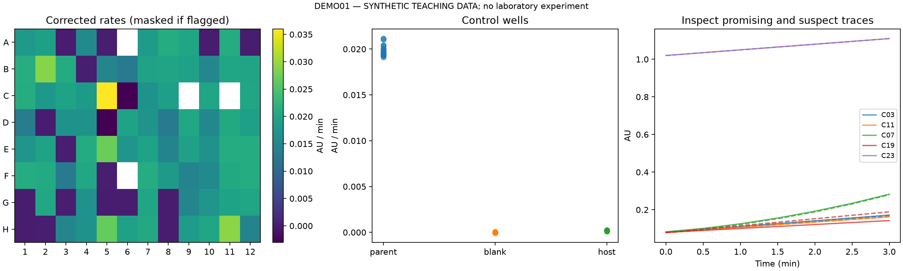

Directed evolution of enzymes: a practical handbook
Evozyme · Edition 2 · 9 September 2026
New to the workflow? Start with the graphical process overview to see how planning, laboratory work, screening and confirmation fit together.
PowerPoint presentation: 20 main slides and four reference slides, with speaker notes and editable charts.
Start with a reliable activity assay, a small traceable library, and access to a compatible plate reader. A standard molecular-biology laboratory, manual multichannel pipetting, outsourced sequencing, and a simple data workflow can support the first campaign. Expand equipment when a measured limitation justifies it.
This handbook focuses on a cost-efficient platform that can be adapted between benign enzymes. The default starting route uses individually tracked clones, expression in a suitable laboratory host, and 96-well activity measurements. The assay and expression system must be chosen for each enzyme. A general workflow does not imply a universal substrate, host, or detector.
Equipment recommendations and decision rules are proposed starting practices. Published findings are cited near the relevant text. All supplied example measurements and prefilled operating costs are illustrative, not laboratory results or current supplier quotations. Software has been exercised on the examples; biochemical adaptations need laboratory validation.
Read according to the decision in front of you
| Decision | Chapter | Companion resource |
|---|---|---|
| What should improve, and how will we measure it? | Campaign definition and assay validation | Campaign brief |
| Which variants, host, and sample format? | Libraries, coverage, and expression | Coverage and budget workbook |
| What must the laboratory and computer provide? | Equipment, software, and purchasing | Equipment acceptance checklist |
| How does a complete example fit together? | Three worked examples | Synthetic screening report |
| Which candidate becomes a parent? What failed? | Campaign progression and troubleshooting | Round review |
| When should the platform change? | Advanced methods | Cost-model interpretation |
| How do I use and check the tools? | Toolkit instructions | Verification record |
| What supports the guidance? | Source map | Primary studies and official documentation |
The first campaign, in six steps
- Write a campaign brief. Identify the parent, exact coding sequence, intended substrate, conditions, improvement metric, properties to preserve, and available effort.
- Establish the parent assay. Measure background, detector range, reaction progress and preparation variation. Demonstrate the intended product or validate the relation between the screen and a separate product assay.
- Complete a tracking pilot. Process known clones from stored material through growth, preparation, measurement, analysis and recovery. Establish usable throughput from the whole workflow.
- Construct a library that fits. Select a mutation strategy, check representative sequences, and reserve capacity for controls, repeats and confirmation.
- Screen, inspect and confirm. Use a predefined ranking rule. Inspect raw traces and plate patterns. Re-grow candidates independently, verify sequences, and confirm performance on the intended reaction.
- Archive and decide. Preserve the parent and confirmed variants, record uncertainty and tradeoffs, and decide whether to continue, change strategy or stop.
Routine protocols remain brief references: PCR, mutagenesis/assembly, transformation, expression, lysis, plasmid preparation, sequencing, purification and stock preparation should follow established local or method-specific procedures.
Minimum equipment and software
| Need | Initial provision |
|---|---|
| Routine laboratory work | Pipettes, thermocycler, gel access, centrifuges, incubators, heating, pH measurement, refrigeration/freezers and standard consumables. |
| Preparation at plate scale | Multichannel pipette, compatible culture plates/shaking fixtures, suitable centrifuge carriers and reproducible recovery/lysis where required. |
| Activity measurements | Reader with the actual assay wavelength, timing, temperature behavior and data export demonstrated. |
| Confirmation | Sequencing and appropriate protein preparation/product-analysis access. Shared services are acceptable. |
| Data continuity | Recoverable stocks linked to plate maps and unchanged raw measurements. |
| Initial software | Sequence editor, method-compatible primer design, spreadsheet software and supported instrument software. |
| Repeatable analysis | The supplied Python example or equivalent validated workflow, with saved settings and quality flags. |
The equipment chapter turns these needs into three configurations and acceptance criteria. The workbook contains an operating budget and separate acquisition worksheet; its example numbers are not a purchasing estimate.
Criteria for moving forward
| Transition | Evidence needed |
|---|---|
| Parent to pilot | Target activity is detectable in a useful range; background and interference have been investigated. |
| Pilot to library screen | Noise permits meaningful ranking, the sample chain works, and recovery has been demonstrated. |
| Screen to confirmation | Candidate measurements satisfy the assay's quality rules and the clone is recoverable. |
| Candidate to new parent | Independent preparations support the required improvement; sequence, product identity and secondary properties are checked. |
| Manual work to automation | A stable assay and quantified recurring bottleneck justify added cost and maintenance. |
These are evidence requirements, not universal numerical thresholds. The example software's 20% retest threshold and quality limits demonstrate a workflow; replace them with rules justified by the intended assay.
For an immediate walkthrough, read the LipA example, open the report, and fill in the campaign brief. The earlier starter guide remains available as a compact equipment-oriented introduction.
App workflow and pilot materials
Read Using Evozyme for guided setup, CSV mapping, confirmation targets and backup recovery. The pilot kit contains beginner and laboratory-user tasks, an observation sheet and a decision rubric. The pilot has not been conducted.
Campaign definition and assay validation
Define the useful improvement
Write the goal as a measurable comparison under specified conditions. “More active” leaves too many alternatives unresolved. A brief might ask for greater initial product formation at equal target-enzyme concentration, while preserving a minimum operational lifetime and required selectivity. Values belong in the brief and should reflect the application.
| Objective | Primary measurement | Companion measurement |
|---|---|---|
| Faster catalysis | Product rate at stated substrate concentration and target-enzyme amount. | Enzyme amount, product identity and substrate dependence. |
| Better production | Useful activity or yield per culture volume or production input. | Growth, soluble expression and preparation yield. |
| Operational stability | Residual activity after a defined exposure. | Activity before exposure and absolute activity after exposure. |
| Substrate preference | Rates or conversions on intended and competing substrates. | Comparable enzyme amounts and analytical response factors. |
| Product selectivity | Desired product fraction, including the relevant stereoisomer. | Total conversion and product identity. |
Do not call a single-substrate rate a measured kcat. For the simple Michaelis–Menten model, v = Vmax[S]/(Km + [S]); a change at one concentration can reflect several underlying parameters. Determine a substrate-response series and appropriate enzyme concentration before estimating kinetic constants. Assay Guidance Manual: enzyme assays
Select a parent using evidence
Compare a small set of plausible starting enzymes before committing to a long campaign. Record evidence rather than assigning unexplained scores.
| Criterion | Evidence to record | Action if weak or unknown |
|---|---|---|
| Starting activity | Product-confirmed activity on the intended or a justified starting reaction. | Establish the baseline or compare another parent. |
| Expression and recovery | Soluble active material in an accessible format. | Test expression before diversifying the gene. |
| Handling stability | Activity after storage and normal bench handling. | Resolve handling losses that could overwhelm variant differences. |
| Assay compatibility | Signal in the proposed matrix and practical confirmation. | Develop the assay before ordering a large primer set. |
| Sequence provenance | Verified coding sequence, boundaries, tags, vector and accession/source. | Resolve identity and mutation numbering. |
| Resource fit | Substrate supply, assay cost, instrument access and cycle time. | Change format or parent if the screen cannot be sustained. |
Use the campaign brief. Record mature-protein versus precursor numbering explicitly; tags and signal peptides can otherwise make mutation names ambiguous.
Select the readout
- Can the intended product or substrate be measured directly at useful throughput? Evaluate that assay first.
- Can a coupled assay report it quantitatively? Establish coupling capacity, specificity and absence of a limiting reporter step.
- Is a surrogate substrate necessary? Demonstrate that promising variants transfer to the intended substrate before further rounds.
- Is a spatial or cellular reporter proposed? Demonstrate that signal remains linked to its source clone and survives a separate biochemical test.
- If none is credible, resolve measurement or select another starting reaction. Library size cannot compensate for an uninformative score.
For crude preparations, establish that measured activity comes from the target. High protein mass purity alone does not prove enzymatic identity. Coupling reagents can introduce additional activities. Assay Guidance Manual: identity and purity
Assemble a validation panel
This is a proposed working checklist. Set acceptance limits from repeated pilot measurements and the smallest improvement worth pursuing.
| Check | Evidence | Response to failure |
|---|---|---|
| Detector response | Product/reporter standards in the matrix across the intended range. | Change concentration, optics or analysis range. |
| Reaction progress | Several enzyme amounts and time courses with a useful interval. | Investigate depletion, lag, inhibition or instability. |
| Matrix background | Reagent blank, host/empty-vector preparation and substrate-omission control. | Determine which background matches actual samples. |
| Product recovery | Known product added to the matrix where appropriate. | Investigate quenching, absorption, chemical reaction or analytical loss. |
| Preparation variation | Independent parent cultures/preparations across days. | Improve growth, recovery or normalization. |
| Plate position/order | Distributed controls and deliberate changes in placement/order. | Diagnose evaporation, temperature, dispensing or read delays. |
| Secondary assay | Parent and comparison panel measured on the intended reaction. | Reconsider whether the proxy supports the application. |
Detector linearity and reaction linearity are separate checks. The Assay Guidance Manual describes establishing both and commonly evaluates initial rates before substantial substrate conversion. Apply these principles to the enzyme rather than borrowing inhibitor-screening concentrations indiscriminately. Enzyme assay development
Analyze rates transparently
Preserve the instrument export. Join observations to plate/well and preparation identifiers. Fit signal versus time in a validated window, retain slopes and residual information, subtract an appropriate matched background, and retain the reaction direction. A falling NADH signal needs the opposite sign convention from a rising product signal.
Converting absorbance slopes to concentration rates requires a justified calibration or extinction coefficient and optical path length. Microplate volume alone is not a universal path length. Without these, report absorbance units/minute. For fluorescence, calibrate in the appropriate matrix and detector settings.
Do not let software choose each variant's most favorable time interval. Record a fitting rule before ranking. High R² can coexist with a saturated detector or biased background; low R² can reflect a genuinely weak reaction. Keep these distinctions in review flags.
Replication and statistics
Technical replicates repeat a measurement from one preparation. Biological/preparation replicates repeat the culture and/or preparation process. Average technical wells within a preparation before using preparation counts to describe biological uncertainty. Record what was actually repeated.
- CV = standard deviation / mean. Useful for positive measurements above background; unstable near zero and unsuitable as a universal blank criterion.
- Fold change = candidate mean / matched parent mean. Require a valid positive denominator and preserve absolute rates.
- Residual activity = post-challenge rate / pre-challenge rate. Preserve both rates so weak starting activity does not disappear behind an attractive ratio.
- Z′ = 1 − 3(σpositive + σnegative) / |μpositive − μnegative|. A control-separation metric, not proof of specificity or sensitivity to small improvements over an already active parent. Zhang, Chung and Oldenburg, 1999
Define the minimum worthwhile improvement, control rules and retest policy before the pilot. Estimate whether preparation variation permits that improvement to be detected. For formal comparisons, use independent preparations as the replication unit and a justified statistical model.
Large screens create chance extremes. Retest from new preparations, randomize confirmation placement, and avoid selecting a parent from the largest single-well result. When making many formal significance claims, specify the comparison set and multiple-testing approach. The supplied program implements screening rules, not hypothesis testing or automatic discovery claims.
Proceed when the brief is filled, signal and controls are demonstrated, fitting/retesting rules are recorded, and the desired improvement is meaningful relative to pilot variation. If the parent or assay needs replacement, record that outcome rather than forcing a campaign.
Libraries, coverage, and expression
Choose diversity that the screen can examine
For a small first campaign, consider defined substitutions or a small number of separately tracked single-site libraries. Broader exploration becomes practical when capacity and assay quality support it.
| Strategy | Useful when | Main burden | What to verify |
|---|---|---|---|
| Defined substitutions | Specific hypotheses or very limited capacity. | Explores only proposed changes. | Construct identity and rationale. |
| Single-site saturation | A residue should be explored broadly. | Repeated/unequal variants in degenerate libraries. | Codon design, representation and background. |
| Gene-wide single-residue scan | Whole-protein exploration fits the screen. | Many construction reactions and repeated sampling. | Site-pooling balance and coverage. |
| Random mutagenesis | Distributed changes/combinations and sufficient throughput. | Variable mutation counts, nucleotide bias, unchanged/inactive clones. | Mutation distribution in representative sequences. |
| Recombination | Several confirmed changes or lineages exist. | Combinations may interact. | Parent sequences, linkage and combined constructs. |
| Model-guided library | A suitable model/dataset supports testable rankings. | Prediction uncertainty and distribution shifts. | Baseline comparison and prospective performance. |
York's single-residue strategy matched their screen better than the broad random libraries they tried. This is an observation for that campaign, not evidence that random mutagenesis is universally inferior. York notes
Choose a construction method and its corresponding primer rules. NEB's Q5 method uses non-overlapping back-to-back primers, with NEBaseChanger providing matching design support. Q5 overview, NEBaseChanger
Count samples and variants separately
A parent of L amino acids has 19L possible single-amino-acid substitutions excluding the unchanged parent. That is a design-space count; 19L colonies do not guarantee coverage.
The planner assumes independent draws with replacement from a specified distribution. Repeated assays from the same clone add precision, not diversity. Distinguish transformed colonies, sampled clones, valid measurements and unique verified sequences in the round record.
Library statistics distinguish expected diversity from the probability of complete sampling. Firth and Patrick describe this distinction and models for common construction strategies. Statistics of protein library construction
For target variant i, per-draw probability pᵢ and n sampled clones:
- Probability of observing i: 1 − (1 − pᵢ)ⁿ.
- Expected distinct targets: Σᵢ[1 − (1 − pᵢ)ⁿ].
- Probability of observing every target is at least max(0, 1 − Σᵢ(1 − pᵢ)ⁿ) and at most minᵢ[1 − (1 − pᵢ)ⁿ].
The last quantities are rigorous bounds under the model, not an exact completeness probability. The lower bound can be loose. They follow from missing-variant probabilities and do not assume independence between observing different variants.
Numerical comparison
For 20 equally likely targets, 96 draws give approximately 99.3% expected coverage. For an ideal single-site NNK library targeting all 20 amino acids, 96 draws give 97.1% expected coverage, while the probability of seeing every amino acid is bounded between 42.0% and 95.3%. These are calculations, not measured library quality.
NNK has 32 codons, including TAG stop, and unequal amino-acid representation. The workbook includes codon counts and treats stop as unused probability mass. It includes the parental amino acid among its 20 targets. To consider only 19 substitutions, remove the parent amino acid from the command-line probability input without renormalizing the remaining probabilities.
Additional off-target loss is separate; do not count stop codons twice. Parental carryover needs special care: if the unchanged parent is a target, it adds probability to that target. The workbook's loss fraction represents material outside the entire target set. Use explicit probabilities for complex mixtures.
For multiple sites, use combination-level probabilities. Multiplying site probabilities assumes independent incorporation, which may not describe a real library. The custom input supports an enumerated target set; it does not infer an unknown distribution from a few sequences.
Library quality checks
Sequence representative clones and record how they were sampled. Look for parental carryover, unexpected changes, stops/frameshifts and uneven site/design representation. Small samples reveal major defects but cannot establish full coverage. Keep sublibrary identities when this helps localize failures.
Many colonies can still yield little usable diversity. Investigate construction and expression separately from activity failure. Verify coding regions and relevant boundaries of confirmed hits; reconstruct changes in a clean parent background when causality is uncertain.
Choose the host and sample format
Obtain active parent material in the simplest accessible format. Change one major layer at a time so losses can be localized.
| Format | Advantage | Potential confounding factors | Equipment consequence |
|---|---|---|---|
| Whole cells | Minimal extraction and recoverable clones. | Transport, metabolism, growth and abundance. | Consistent cultivation/mixing and compatible readout. |
| Lysate | Accessible intracellular enzyme without full purification. | Host enzymes, variable lysis and matrix effects. | Reproducible lysis, clarification and background controls. |
| Supernatant | Convenient for secreted enzymes. | Secretion, degradation and medium variation. | Consistent cultivation and cell separation. |
| Purified enzyme | Control of amount and environment. | Recovery and behavior outside the expression context. | Purification, protein assessment and added labor. |
| Cell-free expression | Access to product and expression mixture. | Background, expression variation and reagent cost. | Expression reagents and DNA identity/recovery method. |
Use a default laboratory E. coli system only if it supplies active protein. Disulfide formation, localization and folding can justify different strains or export routes. NEB expression considerations
Evaluate yeast or another eukaryotic system when needed processing is absent from the current host. Confirm what modifications are actually necessary and compatible with the application. Account for changes in media, vessels, selection, cycle time and background before moving a library. Request a small active-parent demonstration first.
For format changes, compare a panel containing the parent and several characterized variants in both formats. Investigate ranking disagreements before assuming that a different host, lysis method or concentration preserves the objective.
Capacity planning
With W wells, C controls, T technical wells per preparation and B preparations per clone:
Clone capacity per plate = floor[(W − C)/(T × B)].
The workbook starts with 96 wells, 16 controls, two technical wells and one preparation: 40 clones/plate. Four primary plates give 160 slots. Repeat plates and confirmation are separate. These are illustrative choices; the synthetic analysis plate has a richer teaching control panel and is not this capacity layout.
Proceed when intended diversity is defined, sampling fits usable capacity, active-parent expression is reproducible, and the library can be checked and recovered. Reduce the first library if those checks cannot be sustained at the proposed scale.
Equipment, software, and purchasing
Choose a complete configuration
The following are proposed configurations, not vendor bundles. All require routine molecular-biology infrastructure. “Access” may mean ownership, a shared facility, or a service agreement.
| Component | A: shared laboratory pilot | B: dedicated manual screening | C: partly automated screening |
|---|---|---|---|
| Construction | Shared thermocycler, gel system, centrifuge and cloning tools. | Same tools with booked or dedicated capacity. | Same, with batch construction handling if justified. |
| Expression | Small culture batches; compatible shaking access. | Plate culture fixtures, reproducible seals and plate centrifugation. | Validated plate logistics and sufficient growth capacity for automated batches. |
| Liquid handling | Single-channel and multichannel pipettes. | Multichannel/electronic pipetting or a dispenser for repetitive additions. | Liquid handler for validated transfers plus manual exception handling. |
| Assay instrument | Shared compatible reader. | Dedicated reader matching the actual assay. | Same detection requirement, plus reliable integration and recovery after interruption. |
| Sample identity | Written labels and digital plate maps. | Consistent identifiers, inventory and retained stocks. | Barcodes where helpful, checked transfer maps and event records. |
| Confirmation | Sequencing and shared analytical access. | Same, with enough booking capacity for candidate batches. | Same, scaled to prevent confirmation becoming the limiting step. |
| Software | Sequence editor, spreadsheet, reader software and example analysis. | Reusable acquisition methods and batch analysis. | Versioned transfer scripts, supported interfaces and monitored exceptions. |
| Best initial use | Demonstrating feasibility with limited acquisition spending. | Repeated campaigns with a stable assay and regular workload. | A documented repetitive bottleneck after the manual workflow is stable. |
Routine equipment inventory
List these without elaborating standard procedures: pipettes/tips/reservoirs, thermocycler, DNA gel and imaging access, microcentrifuge, vortex mixer, heating block/water bath, incubator and shaking incubator, balance, pH meter, water/sterilization facilities, refrigeration and freezing, long-term stock storage, DNA/protein quantification, protein gel and purification access. Confirm sequencing access before screening.
Electroporation is conditional on the chosen construction/transformation workflow. A low-speed plate spinner does not substitute for a centrifuge capable of the intended cell-pelleting operation. A sonicator is unnecessary if a different preparation method is effective and reproducible.
Verify compatibility before buying
Follow the physical sample: culture vessel → shaker fixture → centrifuge carrier → transfer device → assay plate → reader → retained source stock. Check actual plate height, working volume, sealing requirements, rotor compatibility and instrument software. A component can meet its individual specification and still fail to fit this chain.
For a reader, demonstrate the intended sample and assay rather than relying on a generic sensitivity claim:
| Requirement | Demonstration |
|---|---|
| Correct detection mode | Absorbance wavelength, fluorescence excitation/emission, or luminescence matches the assay. |
| Useful measurement range | Matrix-matched standards and parent dilution series resolve relevant signals without saturation. |
| Reaction timing | Full-plate reading and reagent-addition delays resolve the intended time interval. |
| Temperature | Required range, equilibration and stability work with the actual plates and volumes. |
| Mixing | Mixing is adequate without bubbles or unacceptable settling. |
| Export | Raw well-level observations, times and settings can be retained in an accessible format. |
| Computer support | Software, license, drivers, cables and operating-system compatibility are established. |
Reader incubation and shaking capabilities differ between models; manufacturer documentation is a starting point for acceptance tests. BMG Labtech incubation and shaking
For NADH/NADPH assays, verify 340-nm operation and plate transmission. Clear plates commonly serve absorbance assays, black plates reduce fluorescence background/crosstalk, and white plates commonly serve luminescence. Check exact plate properties, including bottom-reading requirements. Corning selection guide
A basic absorbance reader may meet one colorimetric assay. Absorbance plus fluorescence provides flexibility for multiple planned assays. Fast reactions may require injection, smaller read batches, or another assay format. Additional detection modes should follow a specific need.
Custom imaging and low-cost construction
York's photography system used a roughly 10-cm field of view, a PCO edge 4.2 bi camera, Zeiss 100-mm lens, filtered LEDs, NI control hardware and Python. The reported throughput was approximately 10⁴ colonies/day. York setup
An enzyme-oriented build needs a stable camera/lens, controlled illumination, suitable filters, a light-excluding enclosure, repeatable positioning and quantitative image analysis. Define minimum resolvable spot separation, acceptable lighting variation and signal range using the actual assay. Test product diffusion and clone recovery. Do not infer catalytic performance from colony brightness alone.
Custom and open-source readers are a possible route when engineering capacity is available. Published designs provide useful component and benchmarking examples. Their published cost and sensitivity do not establish the price or performance of a new local build. Include assembly, calibration, maintenance and failed-development time in the comparison. An Open-Source Plate Reader
Software: one default route
| Function | Starting choice | Retained output |
|---|---|---|
| Sequence editing | ApE or an existing sequence editor. | Annotated parent/variant files and traceable numbering. |
| Primer design | Method-matched software such as NEBaseChanger for Q5. | Primer design, target and construction-method record. |
| Tracking and planning | LibreOffice Calc or existing spreadsheet software. | Plate maps, clone register, budget and assay record. |
| Acquisition | Supported vendor software. | Raw measurements and saved settings. |
| Primary-screen analysis | Supplied Python program and, for plots, Matplotlib. | Quality report, candidate list, well-level calculations and plots. |
| Larger analysis work | JupyterLab, pandas and SciPy, when needed. | Reproducible notebooks/scripts and recorded environment. |
| Sequence batches | Biopython, when useful. | Sequence parsing and trace/quality processing. |
| Imaging | Fiji and supported control software. | Original images, segmentation settings and spot-to-clone map. |
The supplied example intentionally keeps the calculation core in Python's standard library; plotting is the only external dependency. Toolkit instructions give installation, commands, expected outputs and adaptation limits. A normal workstation is sufficient. A GPU or machine-learning service is not required for this starter route.
For custom imaging, Micro-Manager supports many devices, but check the exact hardware and driver combination. Avoid choosing hardware on the assumption that an undocumented interface can be automated later.
Keep raw files unchanged and separate from derived outputs. A stable clone ID should link parent/round, preparation, plate/well, verified sequence and physical stock. Back up records and test restoration. Source control is useful for scripts and definitions; it does not replace a raw-data backup or physical-stock archive.
Costs and procurement
Use the workbook's Round budget to estimate recurring costs. Its default example has four primary plates, one repeat plate, 160 primary clone slots and an assumed 90% usable fraction. It budgets eight confirmation candidates with three independent preparations each. Under its deliberately illustrative NOK inputs, total recurring cost is 22,869 NOK, or 158.81 NOK per expected usable clone. These are model outputs, not a price quote or prediction of biological success.
The Equipment quotes sheet leaves purchase prices blank. Enter dated local quotes, specify tax/freight/service exclusions, and mark available/shared items accordingly. Shared access may have zero acquisition cost while still carrying an operating fee. Routine lab infrastructure is assumed available; add missing infrastructure to the inventory and budget before interpreting the configuration as affordable.
Compare ownership with shared access using incremental costs. A simple screening-equipment break-even calculation is purchase/setup cost divided by annual access fees avoided minus added annual maintenance, consumables and labor. Use it only when the denominator is positive and the compared service levels are equivalent. A low capital price can be offset by integration time or unreliable access to repairs.
For used equipment, check optics/installed modules, service history, instrument health, transferable license, compatible computer, consumables availability, calibration/verification options and a return or acceptance arrangement. Use the acceptance checklist with real samples before relying on the instrument.
Before automation, quantify time and errors in the manual method. Verify transfers at the actual volumes and liquid properties, including carryover and dead volume. Vendor accuracy specifications are volume- and hardware-specific; they are not proof of performance with a different liquid or protocol. Opentrons pipette specifications
Three worked examples
Evidence key: “Published” paragraphs describe cited observations. “Proposed” workflows are adaptations for planning. Every supplied data value, candidate identifier and cost scenario is synthetic or illustrative. No example establishes that a particular mutation improves an enzyme.
Example 1: LipA and a colorimetric screen
Published starting point. A study of Bacillus subtilis lipase A used tributyrin agar activity screening followed by a microplate assay with p-nitrophenyl butyrate. The study also examined stability and hydrolysis of different chain-length esters. This supports an accessible optical screening concept while highlighting that substrate choice matters. LipA study
Proposed campaign. Improve activity on a selected intended ester substrate while retaining adequate stability. Use p-nitrophenyl-butyrate hydrolysis as a first-pass assay only if it provides a useful ranking for that objective. Start from a verified LipA construct and active-parent preparation. The choice of soluble lysate versus secreted material must be demonstrated for the chosen construct; secretion should not be assumed from the enzyme name.
Step 1: define equipment and success
Use configuration A or B: routine lab equipment, compatible culture handling, reproducible preparation, a multichannel pipette, absorbance reader suitable for the p-nitrophenol readout, and a separate confirmation method for the intended product. Include protein quantification/purification access if the goal is activity per target-enzyme amount.
In the illustrative brief, a ≥20% first-screen increase nominates candidates for independent testing. This is a teaching rule, not a demonstrated limit of detection. The real threshold should reflect preparation variation and the application's minimum worthwhile improvement.
Step 2: validate the parent assay
Check product calibration in the chosen matrix, spontaneous substrate hydrolysis, host background, pH dependence of the optical response, a usable time window and sensitivity to preparation/dilution. Maintain common conditions during variant comparisons. Test whether the intended product assay supports the screening interpretation.
The example software measures absorbance units/minute. It does not contain a p-nitrophenol calibration or extinction coefficient and does not calculate concentrations or kcat.
Step 3: track a small library
Choose a bounded defined-variant set or a small separately tracked saturation library after the pilot. Verify the library and retain source stocks before destructive preparation. In the supplied teaching dataset, C01–C32 are invented clone IDs with no sequences; the code is demonstrating data handling, not providing a mutation list.
The 96-well teaching plate contains 32 candidates with two technical wells each, eight independent parent preparations with two wells each, eight blanks and eight host controls. Thus, 64 + 16 + 8 + 8 = 96 wells. Positions are reproducibly shuffled to illustrate distributed controls. Each candidate has one preparation, so its first-screen replicate count is not evidence of reproducibility between cultures.
Step 4: inspect the analysis
Run the toolkit example or open the saved report. It joins the plate map to the clone register and seven timepoints per well, fits a fixed interval, checks control quality, subtracts blank drift and compares candidate rates with the parent.
| Synthetic sample | Intended teaching behavior | Correct action |
|---|---|---|
| C03 | Higher first-screen rate with acceptable measurements. | Retest independently. |
| C11 | Higher first-screen rate with acceptable measurements. | Retest independently. |
| C07 | Curved time traces. | Investigate the time window or reaction; no candidate rank. |
| C19 | Technical-well disagreement. | Check preparation/dispensing and repeat. |
| C23 | Signal above the configured measurement ceiling. | Dilute or change validated settings and repeat. |
| C27 | Nonpositive corrected rate in a rising-signal assay. | Inspect background/identity/readout; no favorable rank. |

The ceiling and R²/CV limits are example settings, not measured instrument properties. The program retains quality flags instead of making partial or failed measurements look like confirmed hits.
Step 5: confirm on the intended reaction
Recover C03 and C11, obtain independent cultures/preparations, confirm their coding sequences and test the intended substrate. Where the goal is intrinsic catalytic performance, compare equal quantified target-enzyme amounts and verify product identity. Test required stability/selectivity in the same confirmation batch.
The supplied synthetic confirmation file illustrates how rankings can change:
| Sample | Independent product rates (µM/min) | Mean relative to parent |
|---|---|---|
| Parent | 1.00, 1.04, 0.98 | 1.000 |
| C03 | 1.30, 1.33, 1.28 | 1.295 |
| C11 | 1.02, 1.00, 1.05 | 1.017 |
All rows specify the same illustrative enzyme concentration, 0.1 µM. These are rates at a fixed assay condition, not fitted kinetic constants. The first-screen increase for C11 does not transfer to this product assay. Expression or surrogate-substrate behavior would be hypotheses to investigate, not conclusions proven by these numbers.
Step 6: choose the next parent
In this scenario C03 merits further consideration; C11 does not meet the example improvement objective in confirmation. C03 becomes a next-round parent only after sequence, product and secondary-property checks are satisfied. The table alone supplies none of those missing experimental observations. Record the decision in the round review and preserve the original parent.
Step 7: schedule and budget the round
The following is a planning sequence, not guaranteed turnaround. Standard procedures and incubation details remain in local protocols.
| Block | Work | Release criterion |
|---|---|---|
| Assay establishment | Active parent, calibration, matrix controls and repeatability. | Reliable parent assay; duration is enzyme-dependent. |
| Construction and identity | Library construction and representative sequence checks. | Acceptable library before extensive screening. |
| Screening batch | Culture/preparation, controls, measurement and analysis. | Valid observations and recoverable candidates. |
| Confirmation | New preparations, sequencing, target-product and secondary-property tests. | Supported candidate decision. |
| Review | Archive, costs and next-round design. | Updated brief and available capacity. |
For an illustrative established campaign, reserve a first work block for construction, a second for expression/screening, a third for confirmation and a final review block. Insert actual growth times, sequencing turnaround and shared-instrument bookings before assigning calendar dates. Do not report the readout time as the full cycle time.
The workbook models a separate four-primary-plate budget example with 40 clones per plate, not the richer teaching control layout above. Adjust controls, replicate counts, preparation expenses and analytical confirmation costs before using it for this enzyme.
Example 2: an alcohol dehydrogenase and a cofactor readout
Published starting point. The (S)-specific alcohol dehydrogenase described from Lactobacillus kefir DSM 20587 is NADH-dependent, was expressed in E. coli, and reduced acetophenone to (S)-phenylethanol. The study provides a defined parent candidate; it is not a directed-evolution campaign implemented here. Do not conflate it with differently named NADPH-dependent enzymes from the same species. Parent characterization
Proposed adaptation. Evaluate a focused variant set for improved reduction of the intended ketone under stated conditions. Use NADH loss at 340 nm for a first screen after verifying the direction and stoichiometric relation to the intended product. Confirm product conversion and stereoselectivity independently.
| Layer | Change from the LipA example |
|---|---|
| Equipment | Demonstrated 340-nm reader/plate compatibility; analytical access capable of resolving the relevant products/enantiomers. |
| Sample flow | Prepare active parent/variants, run cofactor-controlled reactions, then analyze selected product samples. |
| Records | Exact enzyme identity, cofactor identity/concentration, substrate, direction, preparation ID and product-assay method. |
| Controls | NADH stability, no-substrate reaction, host background, matrix absorption and parent preparation variation. |
| Analysis | Falling-signal sign convention; rate limits and saturation rules recalibrated for this assay. |
| Confirmation | Quantified target enzyme, intended ketone, product calibration and suitable selectivity analysis. |
| Cost drivers | Cofactor, substrate, analytical standards and chromatography time. |
A cofactor-regeneration system changes the interpretation of net cofactor concentration. Separate the activity screen from process demonstrations using recycling, or model and validate both reactions explicitly. Net NADH absorbance in a regenerating mixture is not automatically the target-enzyme turnover rate.
If cofactor disappearance is fast but desired product is low, test substrate dependence, background consumption, analytical recovery and product identity before advancing the variant. The delivered synthetic LipA settings must not be reused unchanged.
Example 3: P450 BM3 and product-specific analytics
Published comparison. Gärtner and colleagues compared NADPH-depletion screening with multiplexed capillary electrophoresis for P450 BM3 oxidation of α-isophorone. Cofactor consumption could include uncoupling and side products; product-based screening was more effective at identifying beneficial variants in that experiment. P450 BM3 study
Proposed adaptation. Decide whether the goal is the amount of one hydroxylation product, total conversion or a specified product distribution. Obtain a product-resolving assay before treating NADPH loss as a ranking metric.
| Layer | Practical implication |
|---|---|
| Equipment | Shared HPLC/GC/LC–MS or another validated product-resolving method. The published 96-capillary instrument is not mandatory. |
| Sample flow | Expression/preparation, reaction under controlled conditions, sample handling, analytical separation, identified product quantification and candidate recovery. |
| Records | Product standards, sample preparation, analytical run/sample IDs, peak assignments, response factors and enzyme amount. |
| Controls | No-enzyme/background, parent, cofactor loss without target substrate, product recovery and analytical carryover. |
| Analysis | Quantify desired product and side products separately; use cofactor use as additional context. |
| Confirmation | Independent preparations and target-product yield/selectivity under the intended conditions. |
| Cost drivers | Standards, extraction/preparation, analytical consumables, method development and instrument booking. |
If the optical and product assays disagree, preserve both results and investigate the reason. Do not simply average incompatible measures into a composite score. If analytical capacity is limited, a smaller well-characterized library may be more economical than a large screen whose hits cannot be confirmed.
Campaign progression, scheduling, and troubleshooting
Decide from confirmed performance
Treat each round as a decision, with the round-review worksheet recording evidence and the next action. Retain the original parent and representative lineages so comparisons remain possible.
| Observation | Next decision | Evidence required before proceeding |
|---|---|---|
| Plate controls fail | Review or repeat the affected measurements. | A documented cause or reproducible correction; do not rank candidates from the failed plate. |
| Primary candidates fail independent retesting | Investigate selection noise and preparation effects. | Raw traces, recovery/sequence checks, and matched parent preparations. |
| Improvement persists only per culture volume | Decide whether improved production meets the campaign objective. | Target-enzyme amount and per-enzyme performance where catalysis is the objective. |
| Intended reaction improves, with acceptable secondary properties | Consider the variant as a next parent. | Independent confirmation, verified identity, recoverable stock and the predefined improvement criterion. |
| Different variants improve different properties | Retain distinct lineages or test combinations. | A comparison showing the tradeoff in application-relevant units. |
| No useful improvement despite valid measurements | Reassess exploration, parent choice or the objective. | Library representation, active-expression fraction and coverage estimates. |
| Assay or substrate changes | Re-establish comparability before continuing. | Parent and characterized comparison variants measured in both conditions. |
The largest primary-screen value is a nomination. It is not enough to select a new parent. Re-grow candidates independently, preserve technical-versus-preparation identity, verify the coding region and relevant boundaries, and measure the intended product or validated endpoint. Resolve unexpected changes by reconstructing the intended genotype when needed.
Combine mutations deliberately
For two confirmed changes A and B, compare the original parent, A, B and AB in matched conditions. This reveals whether the combination retains each benefit and whether tradeoffs emerge. Specify the measurement scale before interpreting additivity: adding absolute-rate differences is different from multiplying fold changes. A comparison against the original parent should continue even when the immediate parent has changed.
Do not pool different lineages so early that useful alternatives become unrecoverable. Preserve separately identified stocks and sequences. When comparing stability and activity, retain the absolute values as well as ratios; the next parent should meet the campaign's required combination of properties.
A plateau has several explanations: insufficient exploration, a noisy or misleading assay, inaccessible combinations, or an unsuitable starting enzyme. Use the library and assay records to distinguish them before increasing library size. Changing several workflow components simultaneously makes that diagnosis harder.
Schedule the whole cycle
The following is an illustrative work sequence for a manual campaign, not a promised biological turnaround. Expression duration, sequencing service, assay development and facility queues determine actual elapsed time.
| Block | Work to reserve | Exit condition |
|---|---|---|
| Before the first round | Parent identity, active expression, assay validation and inventory. | Parent-to-pilot criteria satisfied. |
| Planning and construction | Library design, orders, construction, initial sequence checks. | Library identity/quality acceptable; required materials available. |
| Tracking pilot | Known clones through cultivation, preparation, assay and recovery. | Usable capacity and sample continuity demonstrated. |
| Primary screening | Staggered cultivation/preparation, timed measurements and daily quality review. | Valid measurements linked to archived clones. |
| Repeats and confirmation | New candidate preparations, parent comparisons, sequencing and product analysis. | Improvement and tradeoffs assessed independently. |
| Review and archive | Final records, stock checks, budget reconciliation and next-round choice. | A named parent or documented alternative decision. |
Book the confirmation instrument while planning the primary screen. Include handling and cleaning between batches, failed preparations, raw-data review and stock recovery in labor estimates. Capacity is limited by the slowest sustained stage, not by the reader's shortest advertised measurement time.
Keep two clocks: hands-on hours for cost and elapsed days for delivery. Waiting for sequencing can increase elapsed time without adding the same amount of labor. Parallel preparation can improve throughput only when downstream measurement remains within the validated handling window.
Use costs to choose improvements
The supplied workbook budgets 160 distinct sampled clones across four primary plates, with one repeat plate and eight confirmation candidates. With its teaching assumptions, 144 clones yield usable primary results and recurring cost is NOK 22,869, or NOK 158.81 per usable clone. This is not cost per unique sequence or per confirmed improvement. It excludes equipment acquisition, which has its own worksheet.
Replace assumptions with measured labor, actual consumable use and dated local charges. Reconcile predicted and observed preparation failure, repeat demand and confirmation workload after the pilot. Culture/preparation costs for controls must be included in the general assay allowance or added explicitly; the default preparation count covers sample slots.
For ownership versus shared access, compare annualized acquisition, maintenance, training and operating costs with shared fees and handling/queue burden. Avoid counting staff time twice. A simple automation payback estimate is:
Payback rounds = acquisition and setup cost / net recurring savings per round, provided net savings are positive.
For example, an assumed NOK 120,000 installed system saving NOK 6,000 per round after maintenance and extra consumables has a 20-round simple payback. These invented values demonstrate the calculation; financing, downtime, useful life and resale are excluded. If the manual assay changes frequently, integration and revalidation can dominate this estimate.
Troubleshooting by distinguishing causes
| Symptom | Plausible causes | Distinguishing check | Next action |
|---|---|---|---|
| Little signal in parent and variants | Inactive material, inappropriate reaction, detector mismatch. | Compare known active material, product standard and fresh reagents separately. | Restore the failed layer before screening more clones. |
| Strong signal in host controls | Host activity or matrix chemistry. | Host, reagent and substrate-omission controls; intended-product measurement. | Change preparation or assay specificity; use matched backgrounds. |
| Curved progress trace | Lag, depletion, inhibition, instability or detector saturation. | Compare enzyme amounts, product standards and time courses. | Establish a justified fitting window or change assay conditions. |
| Edge or read-order pattern | Evaporation, temperature variation, timing or dispensing. | Redistribute parent controls; inspect plate maps and actual timestamps. | Correct the source and repeat affected comparisons. |
| Technical wells disagree | Transfer error, mixing, bubbles or heterogeneous sample. | Inspect wells and traces; repeat transfers from a common preparation. | Repair handling; do not silently remove the lower well. |
| Technical wells agree but preparations differ | Cultivation, expression, recovery or instability. | Independent parent preparations with recorded yields and timing. | Standardize the variable process or choose appropriate normalization. |
| Primary hit disappears on purification | Abundance, host contribution, preparation loss or context dependence. | Compare target-enzyme amount and activity across preparation stages. | Resolve the cause before attributing intrinsic catalytic improvement. |
| Surrogate assay improves but intended product does not | Changed substrate preference or reporter interference. | Separate product assay on the intended substrate. | Revise the screen or reject the candidate for this objective. |
| Sequence differs from the record | Mislabeling, contamination or unintended construction changes. | Re-isolate from stored material and check coding region/boundaries. | Correct provenance; reconstruct where needed. |
| Apparent hit cannot be recovered | Stock failure, transfer error or selection from a mixed sample. | Check stock and register against original map and lineage. | Repeat recovery/identity checks; do not advance an untraceable hit. |
| A large library has few distinct active variants | Sampling bias, carryover, failed expression or excessive changes. | Representative sequences plus parent expression controls. | Adjust construction or expression based on the diagnosed failure. |
Maintenance and continuity
Before a batch, check instrument readiness, correct methods/plates, reagents, labels and an accessible output location. Use a recurring parent comparison to notice drift. Follow manufacturer and local schedules for pipette checks, reader performance, temperature verification, cleaning and centrifuge inspection; intervals depend on usage and equipment.
After a batch, preserve original exports, record deviations, save analysis settings and check a backup. Periodically restore a complete run into a separate folder and reproduce its report. Archive sequence files and stock locations together with decisions. A successful campaign requires a recoverable enzyme as well as an attractive graph.
When to extend the platform
These methods can address specific limitations. Adopt one after demonstrating an active parent, an informative assay and a way to recover the corresponding genotype. Throughput claims from one system do not transfer automatically to a different enzyme.
| Method | Prerequisites and additional capabilities | Main limitations | Adoption criterion |
|---|---|---|---|
| Colony imaging | Spatially localized assay, suitable illumination/camera/optics, image analysis and colony recovery. | Colony size, diffusion, growth and position can influence signal. | A panel of known variants retains its ranking after recovery and biochemical retest. |
| Droplet screening | Compartment-compatible expression/reaction, controlled loading, fluidics, detection/sorting and genotype recovery. | Leakage, occupancy, emulsion behavior and specialist operation; confirmation remains necessary. | Reaction and genotype remain linked through compartment handling and recovery. |
| Cell sorting with fluorescent readout | A validated cellular reporter or display system, sorter access and recovery workflow. | Signal can reflect expression, transport or reporter behavior rather than catalysis. | Reporter rankings predict the intended enzyme property in independent tests. |
| Growth selection | A credible link between desired enzyme function and a selectable cellular phenotype. | Bypass mechanisms, host adaptation and growth advantages can dominate. | Recovered coding changes reproduce the intended biochemical improvement in a clean background. |
| Cell-free expression | Suitable expression chemistry, DNA tracking, matrix-compatible assay and recovery strategy. | Reagent cost, background and variable active-enzyme yield. | The host or transport limitation is demonstrated, and parent performance is reproducible in the new format. |
| Liquid-handling automation | Stable transfers, compatible labware and a repeatable manual method. | Setup, dead volume, consumables, cleaning, interruption recovery and maintenance. | Measured net capacity/cost benefit after full workflow validation. |
| Model-guided libraries | Suitable sequence/structure information and trustworthy assay labels. | Data leakage, small datasets, extrapolation and objective mismatch. | Prospective improvement over a simple baseline at the same experimental budget. |
York's imaging route: reproduce the capability, then adapt
York's sensor work combined whole-plate imaging with custom illumination/control and Python-based analysis. Its nitrocellulose-transfer approach helped control the chemical environment around colonies. Treat this as a coherent assay-and-instrument system: camera sensitivity alone is not the method. Experimental appendix
For an enzyme, first establish whether substrate delivery, product retention and colony recovery support spatial ranking. Compare image scores with individually measured activity. Write down which custom parts need alignment, calibration, repair and software support before comparing its cost with shared reader access.
The magnetic-field hardware in the MagLOV work addressed that sensor's specific readout. It is not a general requirement for evolving enzymes. MagLOV appendix
Droplets and sorting
Agresti and colleagues demonstrated droplet-based directed evolution of horseradish peroxidase. This is evidence that a suitable compartmentalized enzyme assay can support a high-throughput campaign, not that any soluble product assay can be transferred unchanged. Primary study
Before adopting, test loading distribution, signal retention, negative controls, stability through the actual handling sequence and recovery of known positive genotypes. Include downstream retesting and failed-sort recovery in capacity calculations. A shared specialist facility may make a feasibility test more practical than constructing an entire platform.
Cell-free and selection-based routes
For cell-free work, compare the parent and a characterized variant panel with the existing expression route. Measure useful activity per reaction and, where needed, per target-enzyme amount. Include the expression mix in background and interference tests. Preserve a reliable link to the template DNA.
For a selection, establish that the desired enzyme property causes the phenotype. Retesting only in the selected host can preserve an unrelated adaptation. Reconstruct recovered enzyme changes and use an independent biochemical assay. The guide does not prescribe a universal selection circuit: it must be designed around the particular reaction.
Model-guided design
Wu and colleagues provide a primary example of machine-learning-assisted directed evolution; the paper has a published figure correction. Study, correction
Start with a traceable dataset: full sequence, lineage, assay version, preparation identity, measured values, quality flags and failed measurements. Do not turn invalid measurements into zero activity. Separate expression failure from measured low activity when the data support that distinction.
Compare predictions with simple alternatives such as the existing focused library strategy. Evaluate on sequences not used to fit or tune the model, avoiding near-duplicate or lineage leakage where possible. The strongest practical check is prospective: nominate a fixed-size batch before measuring it and compare its confirmed performance with an equal-budget baseline.
For the starter workflow, a normal workstation is sufficient for recordkeeping and the supplied analysis. Cloud compute or a dedicated accelerator should follow a specific modeling requirement. Include model/tool version, input sequence and prediction output in the record; predictions alone do not establish enzyme performance.
A bounded adoption experiment
Define the limitation, select a small parent/variant panel, specify an acceptance rule and reserve a fixed evaluation budget. Measure useful recovered results, staff effort, repeat demand and agreement with the existing confirmation assay. Scale only after this comparison supports the change. Keep the established route available until the new method can reproduce its essential decisions.
Using Evozyme: from the overview to a recoverable campaign
App workflow update · 9 September 2026 · Evozyme 1.3
Start on the process overview. Follow Plan → Test → Learn, then open the planner at the stage you need. Laboratory work sits between the app stages; completing a form does not demonstrate an assay or enzyme improvement.
Find your place in Research Desk
The top navigation opens Workflow, Campaign, Screening, Handbook and Files. The round outline keeps all seven stages available. Workflow is the opening screen and offers a resume link when a campaign is saved. Appearance can follow your system or use light/dark colours.
Campaign setup has three parts: useful improvement, measurement route and a review of the brief. Back retains your answers. If a required answer is missing, follow the correction link or the message beside its field. You can switch to complete forms at any time.
Screening places candidate comparison beside a selected-record inspector. Selecting a clone shows actual raw traces, fitting times, technical CV, stock identity and independent-evidence status. Expand the plate map to inspect controls or individual wells. A filter can hide a selected candidate from the list; the inspector explicitly says when the selected record is outside the filter.
The handbook displays one chapter at a time; search finds matching chapters. Return to… restores the campaign and selected record. Record URLs preserve round, analysis, plate, well and filter within the same browser. They do not transfer data to another device; use a backup for that. While an import is staged, other pages open alongside the original workspace to keep it available.
Files collects backup export, saved campaigns, recovery drafts, separate-copy restoration, reports and templates. The campaign also retains these actions under Manage campaigns & backups.
A short starting path
In Campaign, enter a campaign name, parent enzyme and exact clone ID, the intended improvement, metric and units, and the conditions for comparison. Choose a measurement route. Guided view exposes starting information first; Show complete forms reveals the same records in full. Switching views preserves your entries. Later documentation stays in expandable sections.
If you change the campaign parent before its first analysis, screening and confirmation references that still match the old parent follow the change. Once results exist, references are explicit historical choices. Explain any intentional difference between campaign, screen and confirmation references.
The next-action list changes with the stage. Expand the list across all stages to see unresolved work. It distinguishes missing information, missing evidence, planning inconsistencies, settings review and analysis blockers. The status concerns recorded information, not biological validity.
Before the first screen
- Define the intended reaction and confirmation method. Record demonstrated range, background, timing, repeatability and clone recovery.
- Review equipment access, accessories, software export and stock tracking. Record actual acceptance evidence. Blank purchase prices mean unquoted; zero is an explicit entered amount. Totals update while you type. Changing currency relabels values without conversion.
- Match the library to usable screening capacity. The supported analyser uses 96-well linear-rate screens, one candidate preparation per clone per plate, and independent plate comparisons.
- Match the budget reservation to the assay. Minimum controls are blank wells + host wells + independent parent preparations × technical wells. Six parent preparations, two technical wells, four blanks and four host wells require 20 controls. With four 96-well primary plates and two technical wells per candidate, primary capacity is 152 clones. Additional reserved controls are retained.
- Review costs and analysis thresholds. Prefilled values are teaching assumptions. An acknowledgement is tied to the exact analysis configuration, including the reference clone. Changing configuration invalidates it.
Other plate formats and preparation counts may be planned, but require external analysis. Endpoint and nonlinear assays need another validated method. The app does not convert detector units into catalytic activity.
Import measurements without rewriting the CSV
1. Choose files
Select CSV exports with any filenames. You can include a plate map, clone register and a settings JSON file. Files remain in the browser. Maximum combined uploaded text is 10 MB; expanded canonical inputs also have a 10 MB limit. Proprietary binary exports and Excel workbooks are not supported.
The existing plate_map.csv, clone_register.csv, measurements.csv and assay.json examples continue to work. Map/register files may be omitted if you prepare their identities in the editor. This does not infer clone identity from well position.
2. Assign roles, columns and formats
Assign exactly one measurements file and at most one map, register and settings file. Mark unrelated files as ignored. Review the suggested columns; suggestions are starting points.
- Long layout: one well/time/signal observation per row. Map the time, well and signal columns. Plate and run metadata can come from mapped columns or the explicitly displayed settings.
- Wide layout: one time column; every other column is a well such as A01 or H12. One plate per wide file. Choose the time column and supply the plate ID. Non-well metadata columns must be removed from this defined wide layout before import.
- Choose seconds, minutes or milliseconds explicitly. A small preview shows source values and their converted seconds before fitting. Choose decimal point or comma and the separator for each CSV: comma, semicolon or tab. Thousands separators are unsupported.
- Supply the raw signal unit. It must agree with the analysis settings. No activity conversion is applied. Metadata absent from the source uses the displayed configuration, and that choice is retained with the import.
A mapping preset stores format and column choices. It does not store plate-map identities. Preview its effect for each new file; column names, units and plate identity may have changed.
3. Check the map and units
Inspect the 96-well map, stock references and canonical observation preview. Missing configured times, duplicate observations, unmapped wells and incorrect parent identities are reported with coordinates. Use Back to columns to correct a mapping or unit choice.
Click a well to load its identity. For bulk assignment, enter coordinates separated by commas, such as A01, A02, and supply the sample type, clone ID, independent preparation ID and stock location. The selected wells share that preparation and receive sequential technical replicate numbers. A second independent preparation needs a different preparation ID. Check existing replicate numbers after editing a subset of a preparation; duplicate IDs are rejected by the analyser.
Blank and host controls may have empty clone/preparation identities. Parent controls must all use the declared reference clone. Remove accidental map entries with Remove selected map entries; a measured well still requires a valid map entry before analysis.
4. Review settings, then analyse
The full analyser checks the prepared files and displays plate control status. Review any failures. The comparison shows changes from current settings and the complete effective configuration: references, raw units, fitting times, detector limits, replicate requirements and thresholds.
Click I have reviewed these imported settings, then Analyse and retain this import. A previous acknowledgement cannot approve a new import. Going back to edit the map or columns requires review again. Failed controls may be retained for inspection, but block nomination under the configured rules.
Cancel at any point to discard the staged import. A failed or cancelled import does not replace existing files or analysis snapshots. Saving a mapping preset is a separate explicit campaign edit.
Synthetic wide-file walkthrough
Open the worked example, then select its map and register with the wide minute export and the example settings. Set measurements layout to Wide, time column Minutes, source time unit minutes, and plate ID DEMO01. Confirm columns, inspect the map, review settings and analyse. The converted measurements reproduce the original numeric results: C03 and C11 are nominated for retesting. The data are synthetic and demonstrate software behaviour only.
Understand what was retained
Each mapped analysis keeps three kinds of records:
| Record | Purpose |
|---|---|
| Original uploaded text and SHA-256 fingerprints | Exact source exports, including files marked ignored |
| Versioned mapping recipe and reviewed configuration | Column choices, conversions, explicit map edits and the acknowledged settings |
| Canonical analysis inputs and results | The three CSV files actually submitted to the analyser and its immutable snapshot |
Use Export this run's raw inputs to choose original files, canonical files or the recipe. Quality/settings export includes the recipe and fingerprints. The complete JSON backup includes all of them. A later analysis keeps earlier snapshots; the current assay form may differ from the settings that produced a historical result.
Confirmation and the next round
The Review stage presents the written goal beside the reference, normalization and observations. Optional structured criteria compare a dimensionless mean ratio in an exact named confirmation assay with matching normalization. A target match is descriptive evidence, not an automatic decision or significance claim. Free-text goals and secondary properties still need interpretation.
Record independent preparations, sequence and product checks, stock recovery, secondary properties, evidence locations and the rationale. Evidence completeness and the analyst decision are separate. Justified tradeoffs belong in the rationale; the app does not impose a universal biological success threshold.
Create one linked round creates exactly one new round with the selected clone as its parent. “Retain several lineages” and “Plan a combination library” document intentions. They do not automatically create several rounds or a multiple-parent model. Create each lineage separately and document additional parents and comparison panels.
Saving, conflicts and restoration
Browser saves have revision checks. If two tabs edit a campaign, a stale draft cannot overwrite the newer saved record. Use the conflict panel to export the draft, save it as a separate campaign, or load the latest saved version. Locally retained recovery drafts can be opened from Recovery drafts. Storage failures require an external export; the app does not claim a failed local save is protected.
Export after important changes and record the external backup location. In Review, choose Check a backup by restoring a separate copy. Select a JSON backup, then inspect its imported files, results, confirmation decisions and round links. The restored copy has its own campaign ID. The original saved record remains available through Saved campaigns. A successful structural/hash check does not verify that external evidence files exist: open those separately.
Version 1 records migrate while preserving historical results and decisions. Earlier analyses are labelled as predating explicit reference/review checks. Review the current configuration and run a new analysis to apply the current engine. Close older tabs if a storage upgrade is waiting. Recovery requires a compatible current app and a known-good backup; rolling back the website code alone does not reverse a data migration.
Evozyme pilot kit
Prepared 9 September 2026 for the 1.2 workflow. Status: materials prepared; no participants recruited and no user pilot conducted.
Purpose and participants
Observe whether a first-time reader and an experienced laboratory user can connect the overview, handbook and planner, prepare a supported import, interpret evidence and recover a backup. Use one session per participant initially. Recruit only after the project owner supplies participants or authorizes recruitment. Obtain consent for notes or recordings; use appropriately de-identified files if real instrument exports are supplied.
Preparation
- Use a supported current browser and a fresh test campaign. Keep participants' real records separate.
- Supply the synthetic example, its CSV/JSON files and the wide-minute CSV. State that no experiment occurred.
- Record browser/device, participant experience and prior exposure to Evozyme. Agree whether timing includes handbook reading.
- The facilitator should avoid teaching the workflow before the baseline attempt. Ask the participant to explain what they expect before clicking. Record help when it is needed.
- Keep a known-good backup and external evidence folder for the recovery exercise. Never test by deleting a participant's records.
First-time reader walkthrough
| Task | Completion evidence | Observe |
|---|---|---|
| Read the overview and explain one round | Participant identifies planning, lab work, screening, confirmation and iteration | Confusion between app stages and laboratory work |
| Start a campaign in guided view | Name, parent ID, improvement, comparison and measurement route entered | Unfamiliar terms, fields skipped, use of examples/chapter links |
| Review access and capacity | A shared reader is recorded and a missing capability identified | Whether illustrative costs are mistaken for quotes |
| Use six parent preparations and two technical wells | Control reservation corrected from 16 to 20; four-plate capacity changes to 152 | Whether preparation and technical replicate are distinguished |
| Import the synthetic screen | Maps and units reviewed, settings acknowledged, result retained | Preparation time, failed imports, assistance and backtracking |
| Explain C03 and C11 | Both require independent confirmation; screen nomination is not proof | Misread control status, folds or evidence completeness |
| Export and restore as a separate copy | Original campaign and restored copy remain available | Backup location, external evidence expectations and recovery confusion |
Experienced laboratory user walkthrough
- State the intended reaction, comparison basis and sample-preparation unit. Identify what would need assay-specific validation.
- Review equipment acceptance, costs and realistic throughput; record the gap between planned and observed workload if actual evidence exists.
- Import the wide-minute fixture without rewriting it into long CSV. Explain which metadata are supplied by the settings rather than the file.
- Load a well in the plate editor, correct an intentional identity mismatch, then inspect replicate and stock identities. Test cancellation before retaining the final import.
- Review a changed settings file. Verify that acknowledgement is requested again and earlier snapshots remain unchanged.
- Inspect confirmation observations, normalization, optional targets, secondary properties and analyst rationale. Explain exactly what one linked next round creates.
- Open the same test campaign in two tabs, edit both, and preserve both versions through the conflict panel. Restore a backup as a separate copy and locate original exports, recipe, canonical inputs and external evidence.
If representative reader exports are available, first record their layout, units, missing metadata and preprocessing needs. Attempt an import only within the declared generic CSV contract. Record unsupported cases without claiming reader compatibility from the synthetic fixture.
Observation sheet
One row per task or failed attempt. Blank values mean not observed, not zero.
| Participant code | Experience | Task | Start/end | Completed without help? | Preparation minutes | Import minutes | Failed attempts | Help supplied | Misunderstood field/label | Expected versus observed result | Planned/observed workload | Severity | Notes |
|---|---|---|---|---|---|---|---|---|---|---|---|---|---|
Record exact words or actions where practical. Distinguish a software defect from missing scientific information, unsupported file format and usability confusion. Record abandoned tasks. Do not combine technical wells with independent preparations when describing workload.
Debrief
Ask which step was hardest, which labels were unclear, where the participant expected a different action, what they would need before using real data, and which missing capability would save measurable work. Ask them to locate the original source file for one saved result and explain what is outside the backup.
Decision record and extension rubric
Establish the baseline from observed completion, preparation/import time, failed attempts and help before setting numerical improvement targets. Use this decision table after the pilot; do not fill it with invented findings.
| Proposed change | Observed difficulty / participant evidence | Frequency | Consequence | Representative data available? | Scientific validation cases needed | Implementation effort | Decision and reason |
|---|---|---|---|---|---|---|---|
| Endpoint assays | Pending pilot | Endpoint controls, dynamic range and independent confirmation | |||||
| Further plate formats | Pending pilot | Geometry, identities, capacity, control distribution | |||||
| Reader-specific adapters | Pending pilot | Representative exports, units, locale, timing, metadata | |||||
| Sequence comparisons | Pending pilot | Identity, alignment, numbering and mutation provenance | |||||
| Lineage views | Pending pilot | Single/multiple-parent semantics and historical links | |||||
| Collaboration | Pending pilot | Permissions, conflict handling, audit and recovery |
Prioritize record-loss or incorrect-comparison defects first. Then address repeated blockers within the supported workflow. Choose an analytical extension only when real demand, representative inputs and validation cases are available. Record the decision to defer as well as the decision to proceed. Cloud accounts and automatic significance claims are not prerequisites.
Evozyme companion toolkit
This toolkit provides editable records, a planning workbook, and a runnable primary-screen example. All example measurements, clone IDs, stock locations and confirmation results are synthetic. Budget inputs are teaching assumptions. No sequences or experimentally validated enzyme improvements are supplied.
Start without installing software
Open the saved screening report, worked examples, and planning workbook. Copy the campaign brief into a new campaign folder. The example report includes the actual output from running the supplied program.
Run the example
Use Python 3.10 or newer. The calculation core uses its standard library. Matplotlib is required only to regenerate figures. Tested versions: Python 3.12.14 and Matplotlib 3.11.1 on Windows. The commands below assume the working folder contains the handbook and toolkit directory.
Create an isolated environment and install plotting support on Windows:
python -m venv .venv
.\.venv\Scripts\python.exe -m pip install -r toolkit/requirements.txt
.\.venv\Scripts\python.exe toolkit/evozyme.py analyze --input toolkit/example --output toolkit/example/results_local
On macOS/Linux, the environment interpreter is .venv/bin/python. To run without installing plotting packages:
python toolkit/evozyme.py analyze --input toolkit/example --output toolkit/example/results_local --no-plots
Outputs go into a separate folder. Existing files of the same output names are replaced; use a new run-specific output directory to preserve prior analyses. The program does not modify its input files.
Expected result: plate DEMO01 passes the example control rules; C03 and C11 are nominated for independent retesting. C07, C19, C23 and C27 require measurement review. A nomination is not a confirmed enzyme improvement.
Files and identifiers
| Input | Purpose and required structure |
|---|---|
| plate_map.csv | One row per plate/well. sample_type is candidate, parent, blank or host. Use well coordinates A01–H12. |
| clone_register.csv | One row per clone ID, including parent/round, sequence status/file and stock location. |
| measurements.csv | One row per run/plate/well/time. time_s is seconds; signal is a finite number; units must match the assay settings. |
| assay.json | Machine-readable analysis settings. Copy and validate for a new assay; retain a version with the run. |
| assay_record.csv | Human-readable experimental conditions and provenance. Retain alongside the settings; the program does not parse this file. |
| confirmation.csv | Separate illustrative intended-product measurements. Not processed by the primary-screen program. |
Preserve the column headers. Use UTF-8 CSV and a decimal point for numeric data. The map and register must resolve every candidate and parent to a nonempty stock location. Preparation IDs distinguish independent preparations; technical-replicate IDs distinguish repeated wells within each preparation. The example uses invented locations beginning DEMO_ONLY; replace these with real recoverable locations for laboratory work.
The program rejects duplicate map positions, clone IDs, technical-replicate IDs and observations; unrecognized coordinates; unmapped observations; and run/assay/unit mismatches. It verifies that a stock-location field exists, not that a physical stock is viable or a sequence is correct. Those checks remain part of campaign review.
Analysis settings
| Setting | Meaning in this program |
|---|---|
run_id, assay_id, data_origin, signal_unit |
Identity, provenance and measurement units. |
signal_direction |
+1 for increasing signal, −1 for decreasing signal. |
fit_times_s |
Exact timepoints expected in every fitted well; at least three distinct nonnegative times. Extra observations are retained in the input but excluded from fitting. |
signal_ceiling |
Upper detector limit; any fitted observation at or above it is flagged. This is a configured assumption, not a detector calibration. |
minimum_r2 |
Fit-quality threshold for parent/candidate traces. Blanks and host controls may be nearly flat and are not held to this rule. |
maximum_parent_cv |
CV limit across valid independent parent-preparation means. |
maximum_technical_cv |
CV limit within a preparation. |
maximum_host_fraction |
Largest allowed mean blank-corrected host rate as a fraction of the parent mean. |
minimum_blank_wells, minimum_host_wells |
Minimum valid control wells per plate. |
minimum_parent_preparations |
Minimum independent parent preparations per plate; use at least two for a between-preparation CV. |
minimum_technical_wells |
Minimum valid wells per parent/candidate preparation. |
minimum_fold_for_retest |
Fold increase nominating an otherwise valid candidate for retesting. |
Use positive integer replicate/control counts, finite times and thresholds, and assay-justified values. Controls should be appropriate to the actual sample matrix. This example uses one plate-level reagent-blank correction plus a host-background acceptance rule; it does not automatically model well-specific or clone-specific backgrounds.
What the calculations do
- Join observations to the map and register, checking identity.
- Fit a straight line over the configured times. Missing times prevent a partial fit from qualifying as a hit.
- Flag high signal and poor parent/candidate fits. Subtract the mean valid blank slope and apply the reaction sign.
- Average technical parent wells within each preparation, then calculate the plate's parent mean and variation.
- Check control counts, failed control measurements, parent variation and host background. A failed plate cannot nominate candidates.
- Check candidate measurement quality and technical agreement. Only unflagged candidates receive a fold-change value and decision.
- Save well-level results, quality information, candidate decisions and optional figures.
| Output | Interpretation |
|---|---|
well_results.csv |
Raw slopes, R², corrected rates, identities and measurement flags. |
candidates.csv |
One candidate preparation per plate, technical CV, valid fold change, decision and stock reference. |
quality.json |
Copied settings/provenance, per-plate control metrics and failure reasons. |
report.md |
Human-readable control summary, retest candidates, flagged measurements and figures. |
quality_plots.png |
Single-plate heatmap, control-well values and selected traces; multiple plates receive numbered image files. |
Rates are signal units/minute. Technical wells do not establish between-culture reproducibility. Descriptive Z′ uses parent-preparation means and host-control wells; it is not used as a discovery threshold. Figures show raw individual control wells, while parent CV uses preparation means.
Boundaries when adapting
The example supports 96-well primary screens with one preparation per candidate per plate. It evaluates multiple plates independently and does not pool repeated candidates across plates. It does not estimate kinetic constants, active-enzyme concentration, statistical significance, sequence coverage from observed reads, or corrected rankings across different assays.
It does not automatically correct evaporation, read-order bias, lower detector clipping, path length, reporter stoichiometry, matrix interference or nonlinear kinetics. Inspect these during validation. Falling signals are supported by the sign convention, but a lower detection limit needs an additional assay-specific check. The illustrative threshold values must be replaced before interpreting laboratory data.
The confirmation file deliberately uses independent product measurements to show that a screening gain may not persist in confirmation: C03 averages 1.295× parent; C11 averages 1.017× parent. These arithmetic ratios are presented in the worked example, without a significance claim. Sequence verification, actual product identity and secondary-property checks have not been performed on these invented samples.
Coverage calculation
python toolkit/evozyme.py coverage --probabilities toolkit/example/nnk_probabilities.csv --draws 96
Expected output: 20 target amino acids, 19.420 expected distinct targets, 97.100% expected coverage, and a probability-of-complete-coverage lower/upper bound of 42.006%/95.254%. The bounds are not an exact completeness probability.
For a custom library, fill probabilities.csv. Each row gives a distinct target and its probability per independent draw. Probabilities must be finite, between zero and one, and sum to at most one. Omitted probability mass represents off-target material. Zero-probability targets cannot be observed. Draws must be a nonnegative integer.
The library chapter explains the assumptions. For combinatorial libraries, enumerate joint variants and probabilities; the calculator does not infer them. Repeated measurements from a single clone are not additional draws.
Use the workbook
Yellow cells are editable inputs. Blue numeric text identifies input values. Formula cells calculate outputs. Keep a fresh copy before editing.
- Round budget: enter primary/repeat plates, controls, technical/preparation replication, usable fraction, confirmation workload and recurring costs. Example output: 160 primary sample slots, 144 expected usable clones, NOK 22,869 total and NOK 158.81 per usable clone.
- Coverage: compare uniform targets with an ideal one-site NNK library. The NNK table includes all 20 amino acids and already accounts for TAG stop. Additional off-target loss must exclude that built-in loss. The required-draw outputs apply to the uniform model only.
- Equipment quotes: assign each capability to existing/shared access or purchase. Enter quantity, dated price and source/exclusions for purchases. Missing quotes remain unavailable and block a misleading complete total. Shared operating charges belong in the round budget.
The operating budget assumes routine laboratory infrastructure is available. Add missing capabilities and control-preparation expenses to your actual budget. Its full-plate assay cost is conservative when some wells are unused. Confirmation costs are an allowance, not a demonstrated analytical quote. Include tax, shipping and service charges consistently; the workbook does not estimate them automatically.
Formula recalculation and representative input changes were tested in the authoring engine. Native Excel and LibreOffice were not tested. When opening in your spreadsheet application, recalculate and check the default outputs above before relying on edited values. Verification record
Recordkeeping, backup and tests
Use a campaign folder with separate raw, maps, sequences, analysis and reports subfolders. Keep original exports unchanged. Save the exact analysis settings and software version alongside derived output. Record protocol/instrument versions in the assay record. Copy raw data, sequences and stock registers to a second managed location; test restoration by regenerating a report in a separate folder.
Run the supplied checks with:
python -m unittest discover -s toolkit/tests -v
The 13 tests exercise expected candidate decisions, missing/duplicate data, recovery identifiers, row ordering, signal direction, fitting and coverage bounds. They do not replace instrument acceptance or biochemical validation.
Use the equipment acceptance record when arranging access, and the round review to decide which confirmed variants and conditions enter the next round.
Evozyme reliability update (1.1)
The configuration requires reference_parent_id. Every parent-control well must match it; different parent identities are never pooled. The app previews imported settings and records acknowledgement of the exact configuration. Editing those settings requires a new review. Existing snapshots remain historical records.
Browser saves use revision checks. If another tab saved a newer version, export the pending draft, save it as a separate campaign, or load the latest version. Recovery drafts are local copies; keep an external JSON backup. Restore a backup as a separate copy to check recovery without replacing the active record. Old tabs must close before the database upgrade completes. Use a compatible current app and a known-good backup for recovery; rolling back code does not undo a data migration.
Example screening report
Data origin: SYNTHETIC TEACHING DATA; no laboratory experiment.
Retest labels nominate measurements for independent confirmation. They do not establish improved enzymes.
| Plate | Usable | Parent preparations | Parent CV | Reasons |
|---|---|---|---|---|
| DEMO01 | True | 8 | 3.2% | None under example rules |
Candidates for independent retesting
- C03: 1.463 × parent; stock DEMO_ONLY/boxA/C03.
- C11: 1.359 × parent; stock DEMO_ONLY/boxA/C11.
Measurements requiring review
- C07: insufficient_valid_technical_wells;nonlinear_or_low_signal.
- C19: technical_disagreement.
- C23: insufficient_valid_technical_wells;signal_at_or_above_ceiling.
- C27: nonpositive_rate.
Rates are blank-corrected signal units per minute. There is no protein-amount normalization or kinetic-constant estimation. Z-prime is descriptive here and uses preparation means for parents versus host-control wells. It is not a hit threshold. Inspect traces and plate patterns even when numerical rules pass. Thresholds are illustrative and need assay-specific validation.
Evidence and source map
Prepared 9 September 2026. The handbook separates reported observations, proposed workflow adaptations, mathematical calculations and synthetic teaching data. Primary research supports the scientific examples; official documentation supports software and equipment capabilities. Sources do not experimentally validate the supplied adaptation as a complete platform.
Scientific and methodological sources
| Source | Used for | Scope of evidence |
|---|---|---|
| York: relaxation-sensor experimental appendix | Imaging configuration, construction/screening lessons and colony handling. | Original project methods/notes for sensors; general enzyme adaptations are proposed here. |
| York: MagLOV appendix | Follow-on construction, imaging and specialized magnetic hardware. | Campaign-specific implementation; historical costs are not current quotes. |
| York: MagLOV project | Context for the specialized readout. | Sensor findings under reported conditions. |
| Assay Guidance Manual: Basics of Enzymatic Assays for HTS | Assay range, reaction progress and kinetic interpretation. | Methodological reference; the guide's validation panel is an adaptation. |
| Assay Guidance Manual: enzyme identity and purity | Target attribution and interfering activities. | Assay-development principles. |
| Zhang, Chung and Oldenburg (1999) | Z-factor definition and screening-control quality. | Control separation does not establish improved catalysis. |
| Firth and Patrick (2005): Statistics of protein library construction | Library diversity and completeness distinctions. | DOI 10.1093/bioinformatics/bti516; supplied bounds are explicitly derived occupancy calculations. |
| GLUE: authors' library-statistics resource | Optional background and alternative calculator. | Method/model assumptions must match the library. |
| BSLA deletion and randomization study (2020) | LipA optical-screening starting point. | Published enzyme assays; the supplied 32-candidate dataset is invented. |
| Cloning, expression, and characterization of a novel (S)-specific alcohol dehydrogenase from Lactobacillus kefir | Identity and characterization of the NADH-dependent parent candidate. | Parent characterization, not a directed-evolution campaign carried out here. |
| Gärtner and colleagues (2019): P450 BM3 screening comparison | Product-resolved screening versus cofactor depletion. | Comparison in a specific enzyme/substrate system. |
| An Open-Source Plate Reader (2020) | Feasibility of custom instrument construction. | Published build and benchmarks; new builds require acceptance testing. |
| Agresti and colleagues (2010) | Droplet-based enzyme evolution example. | Specialist compartmentalized assay, not a universal platform. |
| Wu and colleagues (2019), published correction | Machine-learning-assisted evolution example. | Method demonstration; proposed adoption checks are the handbook's guidance. |
Official implementation references
| Capability | Documentation |
|---|---|
| Method-specific primer design | Q5 method overview, NEBaseChanger |
| Expression considerations | NEB: obstacles in protein expression |
| Plate optics and selection | Corning selection guide |
| Reader incubation/mixing | BMG Labtech |
| Liquid-handler transfer specifications | Opentrons Flex pipettes |
| Sequence editing | ApE |
| Spreadsheet work | LibreOffice |
| Analysis and plotting | Jupyter, pandas, SciPy, Matplotlib |
| Sequence-file handling | Biopython SeqIO |
| Imaging | Fiji, Micro-Manager |
Vendor documentation establishes supported features for specified products, not performance in an untested assay. Obtain model-specific specifications, license terms, compatible accessories and dated quotations before purchasing. No current vendor prices are asserted by the workbook.
Locally generated material
The campaign matrices, equipment configurations, decision rules, schedules and templates are proposed practical guidance. The cost values are explicitly stated assumptions. Coverage examples are mathematical outputs under independent sampling with replacement. The screening and confirmation datasets are synthetic; the code and workbook were checked as described in the verification record.
Verification record
Edition 2 · 9 September 2026
Completed checks
| Area | Check and result |
|---|---|
| Example analysis | Ran the supplied input through the program and generated the saved CSV, JSON, report and figure outputs. C03/C11 were nominated; C07/C19/C23/C27 were flagged as intended. |
| Automated tests | All 13 tests passed on Python 3.12.14. Coverage includes known slope, expected decisions, input-order invariance, duplicate/missing records, technical identities, stock references, decreasing signals and library statistics. |
| Coverage mathematics | Compared expectation/bounds against exact enumeration of a small sampling problem. Checked zero draws, impossible targets, certain targets and invalid probability inputs. |
| NNK calculation | Checked 20 amino-acid targets and total non-stop probability 31/32. At 96 draws, expected fraction 0.9710028541; completeness lower/upper bounds 0.4200570821/0.9525403327. |
| Workbook calculations | Recalculated formulas in Artifact Tool; scanned for spreadsheet formula errors. Default budget produced 160 primary slots, 144 expected usable clones and NOK 22,869. |
| Workbook input changes | Checked changes to plate count, zero/missing assay cost, invalid control capacity, zero draws, entirely off-target sampling, one uniform target and incomplete equipment quotes. Restored defaults before export. |
| Figures and workbook layout | Rendered and visually inspected all three sheets and the example quality figure. Plotting used Matplotlib 3.11.1. |
| Multiple-plate output | Exercised a two-plate input; both figures were generated and correctly linked from the report. |
| Export and navigation | Checked 87 formulas in the exported workbook with no stored error cells; checked 71 local document links with none broken. |
| Content consistency | Linked the chapters, templates, worked examples, analysis and planners; distinguished the 32-candidate teaching layout from the 40-clone capacity example. |
The toolkit instructions provide commands to repeat the software checks and describe supported inputs and limits.
What remains application-specific
No biochemical experiment, instrument acceptance test, sequence verification or physical-stock recovery was performed. The three enzyme workflows are proposed adaptations grounded in cited research. The first has synthetic demonstration data; the other two explain the required changes in measurement and confirmation.
The workbook was not opened or recalculated in native Excel or LibreOffice. Check its documented default outputs in the intended application before relying on edited inputs. Equipment prices are blank pending local quotations; recurring cost values are assumptions, not current market estimates.
The program is a teaching primary-screen workflow. It does not establish active-enzyme normalization, detector calibration, product identity, statistical significance, or assay suitability. Set quality and retest rules from the actual parent assay and pilot. Documented model limitations are part of interpreting its output.
Starting directed evolution of enzymes
The expanded Directed Evolution Handbook now provides detailed campaign guidance, three worked examples, planning tools, and a tested example analysis. This starter guide remains the short equipment-oriented introduction.
A practical equipment and software guide for Evozyme · 9 September 2026
Recommended starting configuration: access to a standard molecular-biology laboratory, a 96-well activity assay, a compatible plate reader, manual multichannel liquid handling, outsourced DNA sequencing, and a simple system linking every measurement to a recoverable clone.
This guide assumes a small team working with a benign enzyme that can be expressed in a standard laboratory host. The default is an E. coli workflow; proteins requiring another host may need additional expression equipment. Recommendations below are a starting design for Evozyme, informed by the cited work. They are not a universal validated protocol or a priced purchasing list.
The reusable platform consists of library construction, sample handling, measurement, analysis, and record keeping. The enzyme-specific component is the assay: substrate, reaction conditions, and a signal that reliably reports the desired activity.
1. Decide what the screen must measure
Before choosing equipment, write down the enzyme, intended substrate, operating conditions, and the property to improve. Choose one primary score and any properties that must be preserved.
| Objective | What the assay must distinguish |
|---|---|
| Faster catalysis | Product formation rate at comparable enzyme amounts. |
| Better production | Useful activity obtained per culture volume or production input. |
| Greater operational stability | Activity retained after a defined challenge, alongside starting activity. |
| Different substrate preference or selectivity | Desired conversion relative to competing substrates or products. |
These distinctions determine the equipment. An optical reporter may support rapid screening, while confirmation of a particular product or stereoisomer may require chromatography or another analytical method.
A published P450 BM3 study illustrates the problem: NADPH consumption could include uncoupling and side-product formation, so it did not uniquely measure the desired product. Direct product analysis identified beneficial variants more efficiently in that experiment. Plan access to a suitable confirmation assay from the beginning. Gärtner, Ruff and Schwaneberg, 2019
2. The complete cycle
Choose a parent → design variants → construct the library → express clones → measure activity → confirm hits → archive and choose the next parents.
| Stage | Necessary output |
|---|---|
| Design | Verified parent sequence, mutation plan, and primer or synthesis order. |
| Construction | A library with checked diversity and acceptable parental background. |
| Expression | Identifiable cultures and a retained source for recovering each candidate. |
| Screening | Raw measurements, controls, plate map, and a defined ranking rule. |
| Confirmation | Repeated activity measurements from independent preparations and verified sequences. |
| Next round | Archived parent and hits, documented selection decision, and updated library plan. |
Standard procedures can follow established local protocols: PCR, mutagenesis or assembly, transformation, colony picking, expression, lysis, plasmid preparation, sequencing, and stock preparation. Choose a coherent construction method and its corresponding primer-design rules. For example, NEB's Q5 method uses back-to-back, non-overlapping primers; these rules should not be assumed to match York's rolling-circle approach. NEB Q5 method
3. Essential laboratory equipment
“Essential” means access is required; it does not mean every item must be purchased.
Routine laboratory infrastructure
List these in the lab inventory without treating them as special directed-evolution purchases:
- Single-channel pipettes, filtered tips, tubes, racks, and reagent reservoirs.
- Thermocycler; gel electrophoresis and gel-imaging access.
- Microcentrifuge, vortex mixer, and heating block or water bath.
- Incubator and shaking incubator appropriate for the chosen culture format.
- Refrigeration, reagent freezing, and suitable long-term clone storage, usually shared −80 °C access.
- Balance, pH meter, water supply, sterilization, and routine waste handling.
- A method for DNA quantification and routine protein concentration measurements.
- Protein gel electrophoresis and small-scale purification access when confirming purified-enzyme performance.
- Standard cloning/expression consumables, culture media, and access to sequencing services.
Equipment that determines whether screening works
| Item or capability | Starter requirement | Purchasing implication |
|---|---|---|
| Activity detector | Compatible 96-well plate reader with the optical mode and timing the assay requires. | The main assay-dependent instrument; test a shared reader first. |
| Multichannel pipette | An 8- or 12-channel pipette accurate at the actual transfer volumes. | High priority for a manual plate workflow. |
| Plate-compatible growth setup | Shaker fixtures, culture plates, and seals suited to the expression workflow. | Confirm the incubator accepts and adequately mixes the selected plates. |
| Centrifuge with suitable plate carriers | Capacity for the chosen culture plates and sufficient force for the intended pelleting/clarification step. | A low-speed plate spinner used to collect droplets may be insufficient. |
| Reproducible lysis | A validated plate-compatible method for intracellular enzymes. | Start with an appropriate existing method; a sonicator is conditional. Secreted enzymes may avoid this step. |
| Temperature control | Repeatable reaction temperature and a way to check it. | Reader incubation or a compatible external arrangement, depending on assay timing. |
| Correct assay plates | Optical properties, working volume, and chemical compatibility matched to the assay. | Culture plates and measurement plates often serve different purposes. |
| Hit confirmation | Appropriate protein preparation and a product-specific measurement method. | Use shared purification, HPLC, GC, LC–MS, or other facilities where needed. |
| Data workstation and backup | Instrument-compatible computer and reliable export/storage. | Obtain working software and licenses with any instrument. |
Budget for repeat purchases as well: primers, competent cells, enzymes for construction, plates, seals, tips, lysis reagents, substrate, cofactors, reference standards, sequencing, and confirmation assays. Substrate cost can materially change the economics of a screen.
4. Choose the screening instrument
Default: a 96-well microplate reader
For the first pilot, use individually tracked clones and physically separated reactions. My recommendation is to start in 96-well format and move to 384 wells only after dispensing, evaporation, signal strength, and sample recovery work reliably.
| Assay signal | Detector requirement | Check before choosing |
|---|---|---|
| Color change | Absorbance at the assay wavelength. | The installed filters or spectral range must include it. |
| NADH/NADPH change | Absorbance around 340 nm. | Reader and plate transmission, plus whether cofactor turnover tracks the desired reaction. |
| Fluorescent product or reporter | Fluorescence intensity with suitable excitation and emission bands. | Sensitivity in the actual sample matrix, background, and detector saturation. |
| Luminescence | Luminescence capability. | Timing and any requirement for reagent injection. |
| No dependable optical signal | Suitable direct analytical measurement, or a separately validated coupled assay. | A plate reader alone does not solve this assay. |
Clear plates are commonly used for absorbance; black plates reduce background and crosstalk in fluorescence measurements; white plates are commonly used for luminescence. Check the exact plate specification, especially at UV wavelengths and when reading through the bottom. Corning plate-selection guide
Use these acceptance criteria when evaluating a reader:
- Correct optics: demonstrate the actual assay with its intended plates, volumes, and sample matrix.
- Adequate timing: repeated reads must resolve the reaction. Check full-plate cycle time and the delay between reagent addition and the first measurement. Fast reactions may need an injector, fewer wells per run, or an alternative assay format.
- Appropriate temperature and mixing: verify the required temperature range and equilibration behavior. Incubation and shaking are available on many readers, but capabilities vary by model. Manufacturer explanation
- Useful raw export: time, well identity, signal, and measurement settings must be recoverable in a usable format such as CSV or XLSX.
- Working software: confirm operating-system compatibility, license transfer, cables, manuals, and support, particularly for used instruments.
- Repeatable measurements: run blanks, standards, and repeated parent samples across the plate before accepting the instrument for screening.
For one validated colorimetric assay, consider an absorbance reader. For multiple planned assay types, absorbance plus fluorescence provides more flexibility. Additional modes should follow an actual assay requirement.
Alternative: York-style whole-plate imaging
York's group used a roughly 10-cm field of view to image an entire plate. Their system combined a PCO edge 4.2 bi camera, a Zeiss 100-mm lens, filtered blue/violet LEDs, NI control hardware, and Python. For pH-Countdown, colony transfers onto nitrocellulose allowed control of the chemical environment. Their reported screening capacity was approximately 10⁴ colonies/day. York setup and screening notes
For an enzyme adaptation, the proposed minimum imaging assembly is:
- A camera with reproducible exposure and unprocessed image export.
- A lens resolving individual colonies or assay spots across the plate.
- Suitable illumination and, for fluorescence, excitation/emission filtering.
- A light-excluding enclosure and rigid, repeatable sample positioning.
- Exposure/illumination control; hardware triggering if the assay requires precise timing.
- Image analysis that identifies spots, subtracts background, and maps hits back to recoverable clones.
Proceed only after showing that the signal remains associated with its source clone and predicts activity in a separate assay. Diffusing products, overlapping spots, uneven lighting, and variable colony growth are design issues to test. A faster camera cannot compensate for an unreliable association between signal and clone.
York's MagLOV screen added an electromagnet controlled by an Arduino. That was specific to measuring magnetoresponse and is not part of the general enzyme platform. MagLOV instrumentation
A custom build deserves a comparison that includes assembly, calibration, maintenance, and operator time. Published open-source plate-reader designs demonstrate another possible route, but their suitability must be checked against the chosen assay. An Open-Source Plate Reader
5. The software needed to make the cycle reproducible
Start with the first four capabilities below. Add the remaining tools when the workload calls for them.
| Capability | Practical starting choice | Role in the workflow |
|---|---|---|
| Sequence editing and inspection | ApE or an existing licensed sequence editor. | Maintain the parent plasmid, annotate changes, and review designs. ApE is available without a purchase fee. Licensing information |
| Primer design | A tool matched to the construction method; NEBaseChanger for Q5 site-directed mutagenesis. | Produce method-compatible primers. Batch saturation-library design needs additional checking. |
| Sample tracking and initial analysis | LibreOffice Calc or existing spreadsheet software. | Plate maps, clone inventory, raw-data joins, simple rate calculations, and pilot plots. |
| Acquisition | The instrument's supported software. | Save reusable measurement settings and export raw data. |
| Repeatable batch analysis | Python with JupyterLab, pandas, SciPy, and Matplotlib. | Import measurements, fit appropriate time windows, compare controls, flag problems, and produce reports. Recommended as plate numbers grow. |
| Batch sequence processing | Biopython. | Read sequence files, including ABI traces and quality scores, and support automated sequence checks. |
| Image analysis | Fiji/ImageJ. | Process colony/spot images for the imaging route. |
| Custom instrument control | Vendor interfaces or Micro-Manager, where the exact devices are supported. | Coordinate cameras and illumination; validate compatibility before buying hardware. |
A normal workstation is adequate for these starting tasks. GPU-based models, machine learning, a laboratory information-management system, and a custom web application are optional later investments.
For sequencing review, ensure the chosen editor or sequencing-service viewer can display chromatograms and alignments. Review ambiguous calls before assigning a verified mutation, and check the full enzyme coding sequence in confirmed hits.
Minimum data structure
Keep three linked records, using stable identifiers rather than relying on filenames alone:
| Record | Minimum contents |
|---|---|
| Clone/variant register | Unique clone ID, parent, round, intended mutation, verified sequence status, and physical stock location. |
| Plate map | Plate ID, well, clone ID, sample type, condition, dilution, and biological/technical replicate identifiers. |
| Measurement record | Run ID, plate/well, timestamp, signal and units, assay version, instrument settings, and raw-file location. |
Preserve raw exports unchanged. Save analysis settings and derived results separately. Retain original sequence traces and the lab record of each preparation. Back up both digital records and the information locating physical stocks. Version control can help with scripts and assay definitions; it does not replace a data backup.
For the pilot, the analysis should produce a plate heatmap, control distributions, relevant time traces, and a candidate table linked to recoverable stocks. Define quality flags for missing controls, saturated signals, non-linear traces, and unusable wells before ranking candidates.
6. Run a small pilot before expanding the library
The first milestone is a trustworthy, repeatable cycle, including clone recovery. Discovering an improved enzyme is a subsequent biological outcome and is not guaranteed by a successful equipment pilot.
Establish the parent assay. Show a usable signal above appropriate blanks and host/background controls. Test a dilution series and reaction time course to find a quantitative measurement range. Check the effect of the sample matrix on the readout.
Measure variation across the workflow. Grow and prepare parent controls independently, then repeat the assay across plate positions and on another day. Technical repeats measure dispensing/reading variation; independent cultures also capture expression and preparation variation. Use the measured noise to decide what improvement is detectable.
Exercise tracking and recovery. Follow a small set of known samples from stored clone to culture, measurement, analysis, and recovered stock. Include distributed parent controls on every screening plate. Avoid designs that confound a variant group with a plate edge or processing order.
Build a library that fits the pilot. A focused set of substitutions or a small number of separately tracked saturation libraries is a practical first test. Check sequence identity, mutation distribution, and parental background on representative clones. An ordinary spreadsheet is sufficient to plan this first library.
Screen and confirm. Rank candidates using the predefined score. Re-grow promising clones from retained stocks and repeat the assay from independent preparations. Confirm sequences; where needed, reconstruct a mutation in the parent background. Use the intended substrate and a product-specific assay for the final comparison.
Choose the next parents. Archive the previous parent and confirmed hits. Record the improvement, uncertainty, and any loss in another required property. Maintain separate identities when carrying several candidates forward.
For activity-per-enzyme claims, compare appropriately quantified enzyme preparations. Culture density is useful context but is not a measurement of active enzyme concentration. Increased activity per culture can be a useful production improvement; describe it accordingly.
Size the library using measured capacity
Count the whole workflow: picking, growth, preparation, assay setup, reading, analysis, recovery, and confirmation. Reader speed alone is not throughput.
An illustrative capacity calculation: with 16 wells reserved for controls, a 96-well plate has 80 sample wells. At two technical assay wells per clone, that is 40 clones per plate, or 160 across four plates. Independent cultures and confirmation consume additional capacity. These are planning numbers, not a recommended universal plate layout.
A protein with L residues has 19L possible single-amino-acid substitutions relative to its parent. Sampling that many colonies does not guarantee observing every substitution. Degenerate-codon libraries contain repeats and unequal amino-acid probabilities; common NNK designs also include a stop codon and can regenerate the parent residue. Plan coverage explicitly before claiming an exhaustive scan.
York found single-residue libraries better matched to their screen than broad random mutagenesis. They also reported useful progress from retaining several winners, and regretted postponing screening upgrades. These are relevant design lessons, rather than guarantees for every enzyme. York's evolution lessons
7. Purchase in stages
| Priority | Obtain or arrange access to | Evidence needed before spending more |
|---|---|---|
| First | Routine molecular-biology facilities, compatible shared reader, multichannel pipette, culture/assay plates, sequencing, and sample-tracking software. | Parent assay works and samples remain recoverable. |
| Next | Reliable plate growth/centrifugation, validated preparation method, independent hit-confirmation access, and repeatable analysis. | A small screening batch produces interpretable results across preparations and days. |
| Then | Dedicated reader, electronic dispensing, improved temperature control, or other equipment addressing measured delays or errors. | Quantified bottleneck and expected improvement in usable results per unit cost. |
| Later, if justified | 384-well miniaturization, liquid-handling robot, automated colony picker, imaging station, droplets, or cell sorting. | The assay remains valid in the new format and the added throughput is usable. |
An electroporator, automated purification system, and in-house sequencer are conditional purchases. Choose them only when transformation efficiency, purification volume, or sequencing demand justifies ownership.
York reported approximately $1,000 for 284 MagLOV primers and approximately $60 to update primers around a new winner. These were historical primer expenses, excluding the rest of a round. Use them as an example of balancing reagent spending against labor, not as a current project budget. MagLOV library costs
Track total operating cost per confirmed candidate: consumables, sequencing, instrument access, labor, failed batches, and confirmation. Keep initial equipment spending separate so ownership can be compared with shared access.
8. Starter checklist
- Parent enzyme, host, intended substrate, and primary improvement metric are defined.
- Routine lab infrastructure and standard protocols are available.
- The activity assay has been demonstrated on the proposed instrument and plates.
- Reaction timing, temperature, sample preparation, and liquid handling are repeatable.
- Each measured sample links to a recoverable clone and a plate map.
- Instrument settings and raw data can be exported and backed up.
- Controls and an analysis rule are defined before screening.
- Sequencing and independent hit confirmation are available.
- Library size fits measured end-to-end capacity, including confirmation.
- Further equipment purchases address a demonstrated bottleneck.